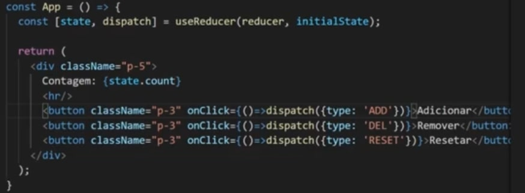

React Hooks
O que são Hooks ?
Hooks são recursos do react que contem diversas funções, como guardar e alterar o estado de algum dado na nossa aplicação por exemplo. Todos os hooks começam com o use na frente, como o useState por exemplo. Quando dominarmos bem o conceito do React, podemos criar nossos próprios hooks, que serão chamados de CustomHook.
Hooks precisam ser importados e geralmente serão úteis em todas as aplicações. Daqui para frente teremos o resumo de vários Hooks.
useState
O useState serve para gerenciar o estado de algum valor onde poderemos alterar e consultar também. Vamos a prática:

Aqui atribuimos o useState com o valor inicial de Matheus, para a variável name. Porém ao darmos um console log nessa variável, iremos perceber que o useState retorna um array com duas posições. O primeiro valor é o seu valor inicial setado na função acima, e a segunda posição é uma função, que servirá para alterar a variável inicial em questão(nesse caso o name), que por padrão nomeamos com setName, ou setIdade, enfim, set o nome da variavel em questão.
Agora que já entendemos a estrutura do useState (variavelAtual, funçãoParaAlterarEstado => useState('ValorInicial)), é necessáriio saber que o usestate sempre será visto de forma desestruturada. Exemplo:
const [name, setName] = useState('Guilherme')
Dessa forma, sempre que em tela precisemos alterar o valor de name, utilizamos o setName.
Podemos ter um botão com um evento onClick que ativa uma função mudarNome, por exemplo, dentro dessa função usamos o setName('GuiGui'), que ela será alterada.
Sempre que utilizamos essa função (vinda no segundo parametro do useState), temos como receber um prevState por parâmetro. Esse prevState apenas nos informa o valor do estado atual. Como boa prática, ao invés de mudarmos direto, podemos ativar uma function para se blindar de possíveis erros.
setNumber((prevState)=> prevstate + 1)
Dessa forma podemos nos "blindar" de double clicks, entre outros possíveis mini-bugs que o react pode vir a oferecer.
Aqui abaixo temos um exemplo do uso de useState dentro de um input, onde pegamos o nome digitado e replicamos embaixo.

useEffect
É um hook que sempre será utilizado no corpo do nosso componente. O useEffect possui dois parâmetros, uma função de efeito e um array de dependências. Se não colocarmos nada dentro desse array a função de efeito será disparada apenas quando o componente for renderizado. E dentro desse array, tudo que colocarmos ali ficará sendo monitorado. Por exemplo, podemos colocar uma variavel: x dentro do array, e sempre que ela sofrer alguma alteração (setX: y) por exemplo, a função de efeito dentro do useEffect será disparada. Toda variavel ou função que será utilizada dentro do useEffect, precisa por boas práticas, estar dentro desse array de dependências.
Outro detalhe, é que uma função dentro do useEffect não pode ser assync diretamente no hook como no exemplo abaixo:
Para solucionar isso, podemos criar um uma função load, ou uma função auto executavel como nos exemplos abaixo:
useReducer
Reducer são basicamente um complemento do State. Quando queremos salvar uma informação e depois altera-la, utilizamos o já visto useState. O Reducer tem o mesmo papel do State, porém ele só é indicado quando temos problemas mais complexos para resolver. Quando falamos em complexo, é que na verdade o useState trabalha com uma variável, já o useReducer tem a capacidade de monitorar várias, dessa forma o código fica menor e mais limpo. Com o tempo iremos estudar também o useContext no qual irá funcionar muito bem trabalhando com o reducer.
Quando usamos o STATE, temos o nome do state, e o setNomeDoState para atribuir um novo valor.
No Reducer, temos a seguinte estrutura:
const [state, dispatch = useReducer (reducer,initialState).
- STATE - É parecido com o useState, é um estado que gerencia vários estados pequenos. A diferença é que aqui eles são gerenciados na mesma funcionalidade.
- DISPATCH - É a função a ser chamada dentro do JSX, com o argumento do nome da action, para ser executada dentro da função Reducer.
- REDUCER - É uma função que vai armazenar cada ação que pode ser tomada para alterar os estados. Em um contador por exemplo, pode ter o ADD, REMOVE, RESET. Essa função recebe por padrão dois parâmetros state , action. Geralmente utilizamos SWITCH para escolher.
- INITIAL STATE - É igual o parâmetro do useState. É o valor inicial de cada estado a ser monitorado pelo reducer. Podendo ser diretamente um 0 por exemplo, porém como estamos usando reducer, geralmente iremos mapear mais de um estado, e para isso colocamos um objeto, com o estado inicial de cada um.
Ou seja, dentro do código, começamos criando um objeto com os estados a serem monitorados (initialState), e em seguida criamos a função reducer, onde receberemos o state, e colocaremos todas as actions possíveis para tal ação. Por exemplo, colocamos um initial state um objeto com um count. { count: 0 }
Dentro do nosso JSX, para exibir esse count, utilizamos o state.count. Assim apenas o dispatch estará faltando para o hook estar 100% em uso. Básicamente o dispatch irá disparar uma ação para o reducer. Dentro do evento no jsx, seja ele onCLick, onCHange, onSubmit, ao invés de chamarmos uma função diretamente, nós chamamos : () => dispatch('nomeDaAçãoEscritaNoReducer').
Para melhor compreendermos, temos um exemplo com o contador. Toda a função que utilizarmos no useReducer, por padrão ela vem com dois parâmetros (state, action). Através da ação desse action que iremos trabalhar o que fazer.
useCallback
É